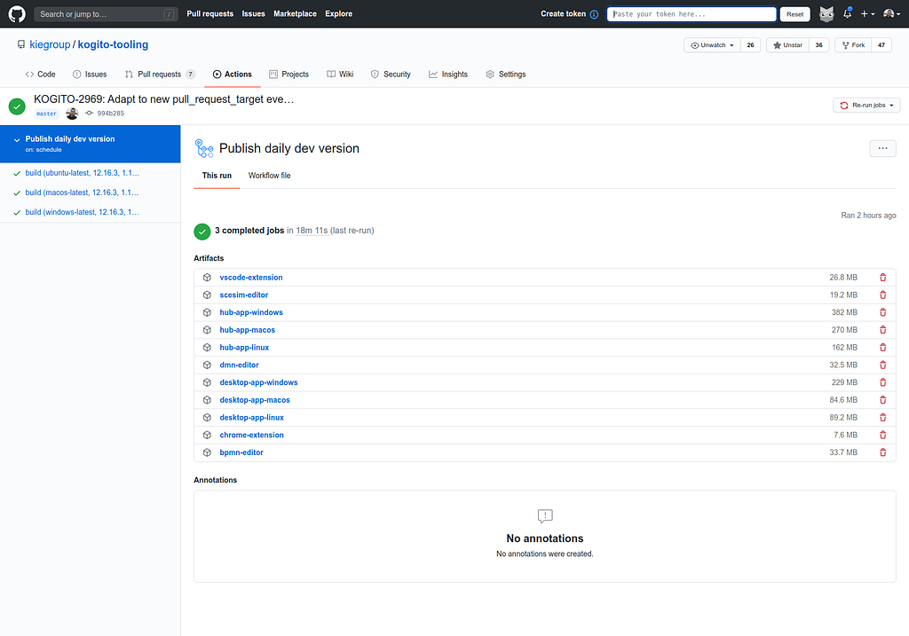
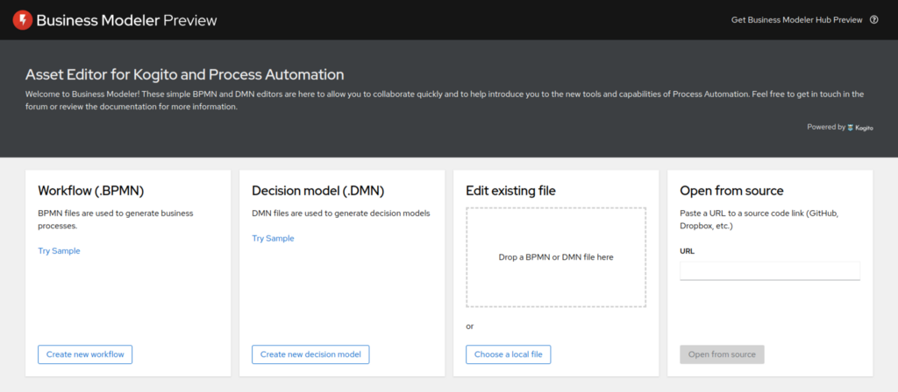
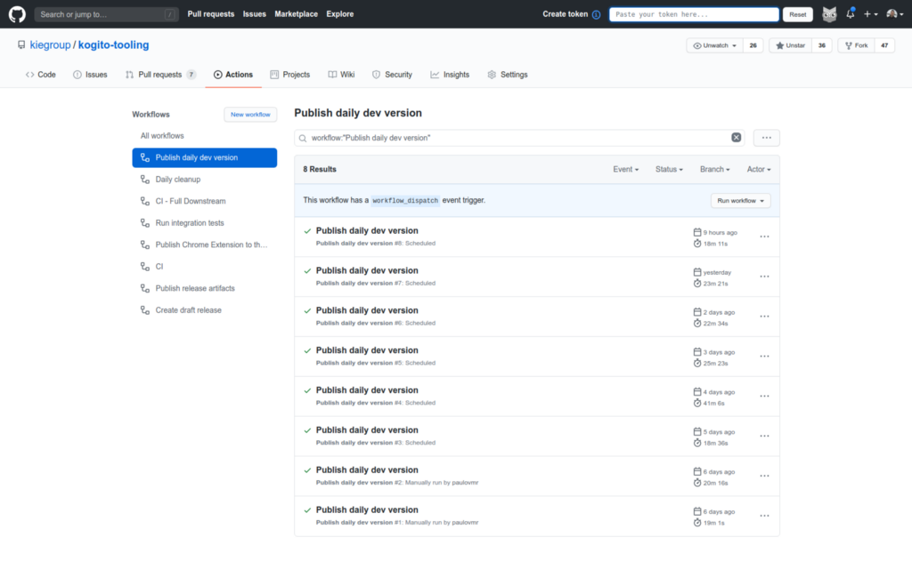

Kogito Tooling daily releases
If you are eager to try out the latest features of Kogito Tooling and don’t want to wait for the next release cycle, it is now possible to access the daily builds of our entire stack, including Business Modeler, VS Code Extension, Desktop, and Chrome Extension.

How to access it?
Every day, we release a new version of the Business Modeler Preview, and it can be accessed on the following URL: https://kiegroup.github.io/kogito-online/dev.

The other artifacts can be downloaded in the most recent job in the list: https://github.com/kiegroup/kogito-tooling/actions?query=workflow%3A%22Publish+daily+dev+version%22

What does it include?
This release is built every day and contains our newest features, everything that is on our master branch.
We hope this helps all interested people to try it out and stay tuned as early as possible without having to manually build the tooling!